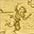
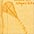
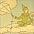

|    |
|
7. Elsa Eisgruber. Sause Kreisel sause: Kinderspiele in Bildern [Spin, Top, Spin!: Children’s Games Illustrated]. Berlin: Herbert Stuffer Verlag, 1928. Stars and faces have always been among the most popular motifs for kite decoration in the West. Even famous entertainers, such as the popular clown Joey Grimaldi, could have seen their faces flying in the blue sky during the nineteenth century. This tendency to personify the kite is also at the heart of this traditional German nursery rhyme illustrated by Elsa Eisgruber that goes something like this: “Climb kite,/ Climb all the way up to heaven/ High up above/ Look at the wide world.” 7a. Playtime ABC. New York: McLoughlin Bros., ca. 1900.
|